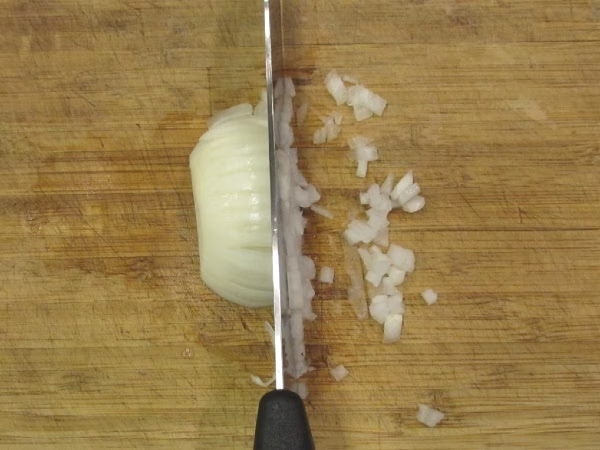

Preparazione

1. Per preparare il guacamole, per prima cosa tagliate e tritate finemente la cipolla.

4. Prelevate la polpa con l’aiuto di un cucchiaio e versatela all’interno di un mortaio.

7. Nel frattempo, aggiungete anche la cipolla tritata.

10. Ora tagliate il pomodoro a dadini con un coltello.

2. Tritate con un coltello finemente anche il coriandolo.

5. Spremete il lime e aggiungete il succo a mano a mano nel composto.

8. Dopo averne tritato il necessario, aggiungete anche il coriandolo.

11. Con un cucchiaio aggiungete il pomodoro sulla salsa.

3. Nel frattempo, dividete l’avocado a metà ed estraete il nocciolo.

6. Cominciate a pestare fino ad ottenere una crema.

9. Pestate ancora e aggiustate di sale. Se volete, potete aggiungere del peperoncino.

12. Aggiungete qualche nacho e il vostro guacamole è pronto per essere servito!